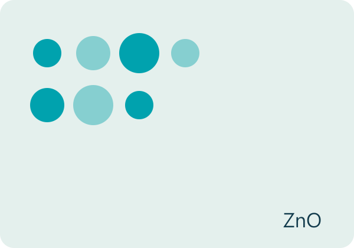
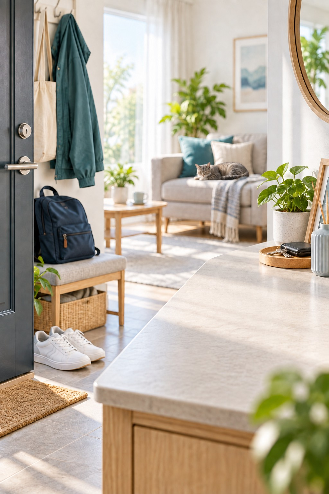
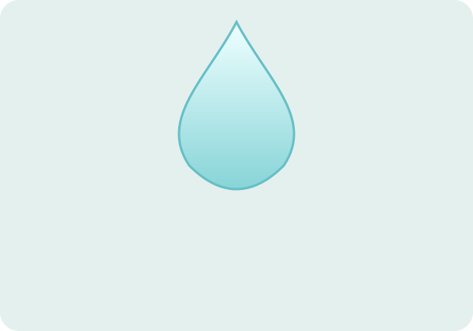
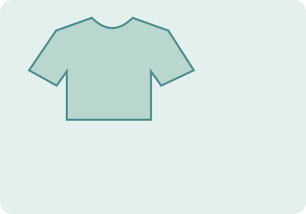

30 奈米氧化鋅
依原廠資料，配方採用奈米氧化鋅抗菌材料。圖示用於說明材料概念，並非顯微影像。
ACTIVE ZINC / EVERYDAY TEXTILE CARE
把日常照顧，留在衣物之間。
30 奈米氧化鋅抗菌材｜衣物・鞋包適用
定價 NT$450 / 200 mL
查看購買通路了解檢驗結果不需稀釋，依使用方式均勻噴灑後晾乾。
使用前先測試材質相容性。



A SMALL STEP IN YOUR DAILY ROUTINE
照顧日常接觸的布料用品，可以是一個簡單的步驟。從外套、背包到鞋面，先確認材質，再依包裝方式使用。
長效安鋅抗菌噴劑以超純水與 STC 奈米氧化鋅抗菌複合材為主要成分，讓材料科技融入日常使用。
情境圖為應用示意，請勿直接噴灑人體、寵物、食物及餐具。
INGREDIENTS / MATERIAL DESIGN

依原廠資料，配方採用奈米氧化鋅抗菌材料。圖示用於說明材料概念，並非顯微影像。

以超純水作為配方基底。主要成分依原廠包裝資料列示。
原廠以乳化技術使奈米氧化鋅抗菌材均勻穩定分散。

使用前先於不明顯處測試材質相容性，確認無異常後再使用。
30 奈米為原廠材料粒徑資料；不代表成品濃度。成分濃度未於本次資料中揭露，不另推估。
TEST RESULT / SPECIFIED CONDITIONS
為送檢樣品於指定條件下的結果；不是立即除菌或噴後持續24小時的防護保證。
| 檢測機構 | Intertek 全國公證檢驗股份有限公司 |
|---|---|
| 報告編號 | TWNC01059356 |
| 報告日期 | 2022/03/02 |
| 送檢樣品 | White liquid；LI-02 |
| 測試菌株 | Escherichia coli ATCC 8739 |
| 接觸時間 | 24 小時 |
| 測試程序 | 依申請人要求，參考 USP XLI <51> |
| 菌數變化 | 初始 2.4 × 105 CFU/mL； 24小時後回收菌數 <10 CFU/mL |
報告未評估立即除菌、所有菌種或病毒，以及噴後持續24小時的防護效果；實際應用受接觸時間、用量、表面狀態與材質影響。
閱讀完整四頁檢驗報告HOW TO USE
先於不明顯處少量測試，確認無變色或其他異常後再使用。
依原廠衣物鞋子使用說明，來回均勻噴灑2–3次。
使用及補噴方式依實際包裝標示；清洗或摩擦會影響表面狀態。
PRODUCT INFORMATION
| 商品名稱 | 長效安鋅抗菌噴劑 |
|---|---|
| 品牌 | STC Nanotech |
| 容量／規格 | 200 mL／單瓶 |
| 定價／幣別 | NT$450／TWD 新台幣 |
| 主要成分 | 超純水、STC 奈米氧化鋅抗菌複合材（依原廠資料） |
| 配方特點 | 不含酒精、次氯酸（依原廠資料） |
| 用途範圍 | 衣物、鞋包之日常照顧；依實際包裝使用說明 |
| 製造地 | 台灣 |
| 製造日期／有效期間／批號 | 依實際商品包裝標示 |
| 保存方式 | 密閉保存於通風陰涼處，避免高溫及陽光直射 |
| 供應業者 | 勝勢科技股份有限公司 |
| 聯絡資料 | 02-2831-2989／info@stcoptics.com |
| 地址 | 221416 新北市汐止區新台五路1段93號17樓之11 |
「長效」為既有商品名稱的一部分；這份報告的24小時為樣品與菌液接觸培養時間，不能直接解讀為噴後持續24小時有效。補噴方式以實際包裝為準。
此頁為200mL衣物鞋包應用素材，不作人體、寵物或食品直接噴灑用途。「不含酒精」不等於可飲用、可吸入或適合所有材質。
避免吸入噴霧及接觸眼睛、傷口。勿與其他清潔劑或化學品混合。置於兒童與寵物無法取得處，保持容器密閉，於通風陰涼處保存。如材質有異常或使用後有不適，請停止使用並尋求專業協助。
本頁為商品介紹及素材展示，未提供購物車。請至販售通路確認200mL規格、庫存及成交價格。
STC 母公司官網STC 蝦皮官方賣場CHANNEL ASSET DOWNLOADS
2000×800橫幅、1200×1500手機圖、2048方形商品照，附可貼上商品說明及TWD草稿CSV。
下載 Shopify 素材九張1200×1200方圖，包含主圖、檢驗條件、材料圖解、用途、規格與使用提醒。
下載蝦皮素材